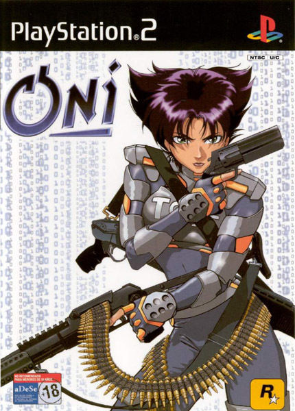
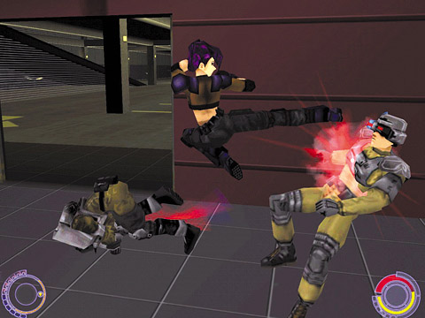
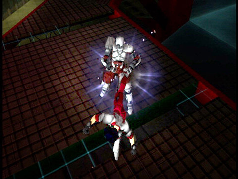
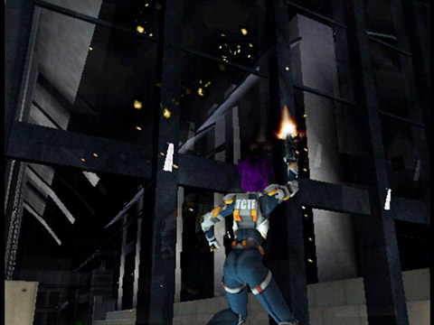
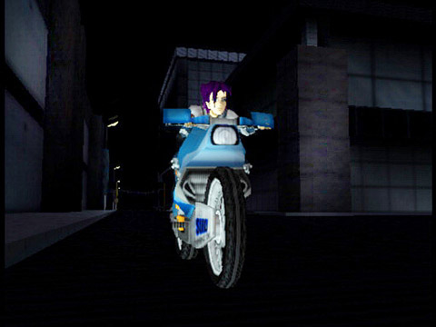

ONI

Descripción
Oni nos lleva a un futuro oscuro en el que nos ponemos en la piel de Konoko, una agente especial del cuerpo de delitos tecnológicos que tendrá que enfrentarse al Sindicato, una peligrosa organización criminal.
Sin embargo, a medida que avancemos en la historia, descubriremos que el pasado de Konoko esconde muchos secretos y que no todo es lo que parece.
En cuanto a la jugabilidad, combina combates cuerpo a cuerpo con armas de fuego y tecnología futurista, ofreciendo una mezcla de acción bastante particular.
Capturas del videojuego




Información del videojuego
| Desarrollador | Plataforma | Fecha de lanzamiento |
|---|---|---|
| Bungie | PS2 | 29 de enero de 2001 |